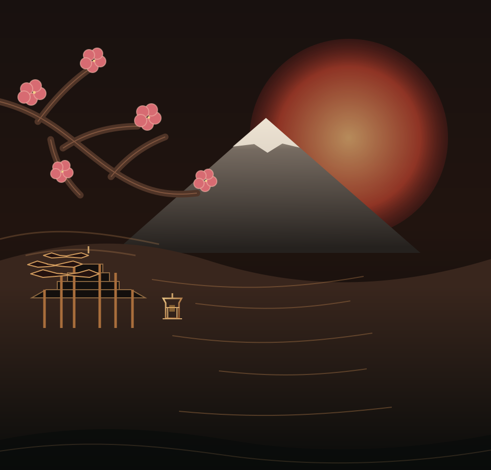

Спокойный выбор
Заранее подберите подходящую зону.

Забронируйте свой столик.
В PHP-версии форма отправит заявку для последующего подтверждения. На GitHub Pages она сохранится локально и не резервирует стол.
Учебная концепция · все бизнес-данные вымышленыЗаранее подберите подходящую зону.
Укажите повод или предпочтения.
Заявка — запрос, бронь подтверждается отдельно.
Схема выбора помогает указать предпочтительный столик, но не показывает реальную доступность.
Выберите зону и предпочтительный стол. Схема не подтверждает наличие.
Зона не выбрана. Выбор стола — только пожелание.

Tokyo Premium — вымышленная учебная концепция. Подтверждённые сведения об услугах и месте отсутствуют.
Коротко о том, что происходит после отправки учебной заявки.
В PHP-версии создаётся запрос, который ещё должен подтвердить сотрудник ресторана. На GitHub Pages запись хранится только в этом браузере и никому не отправляется.
PHP может отправить письмо, если администратор настроил SMTP на сервере. Без этих настроек заявка остаётся в очереди; статическая версия Pages письма не отправляет.
Да, используйте поле пожеланий. В демонстрационной версии не отправляйте реальные контактные, медицинские или иные чувствительные данные.
Выберите один из учебных форматов в поле «Формат вечера». Это пожелание к заявке, а не обещание доступности дегустационного ужина.